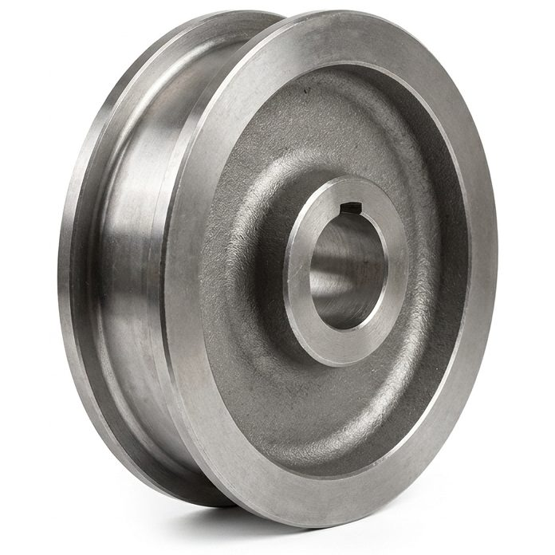
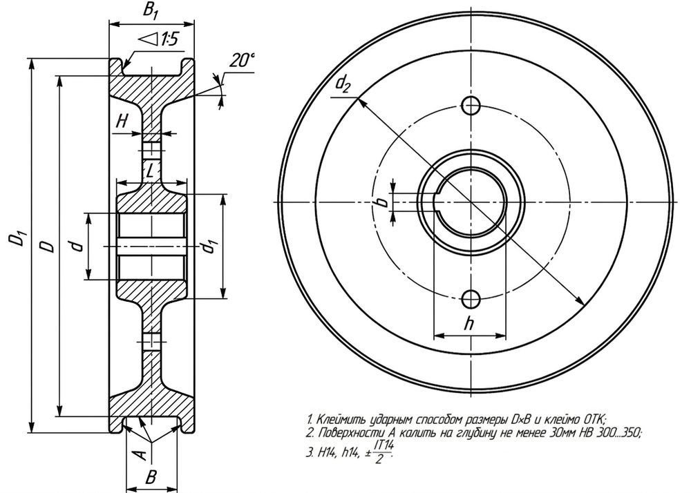
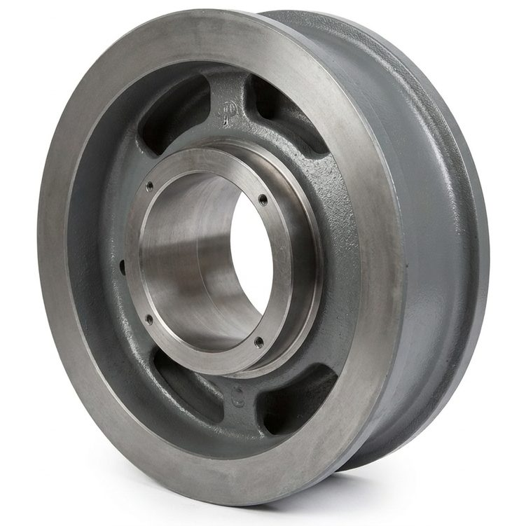
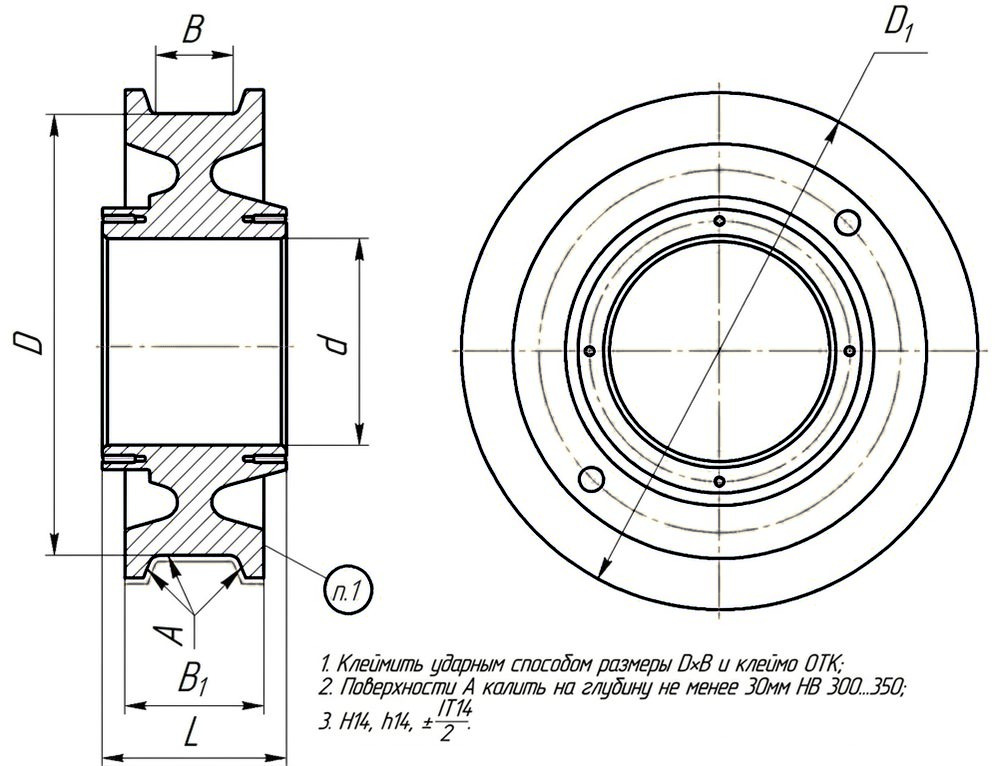
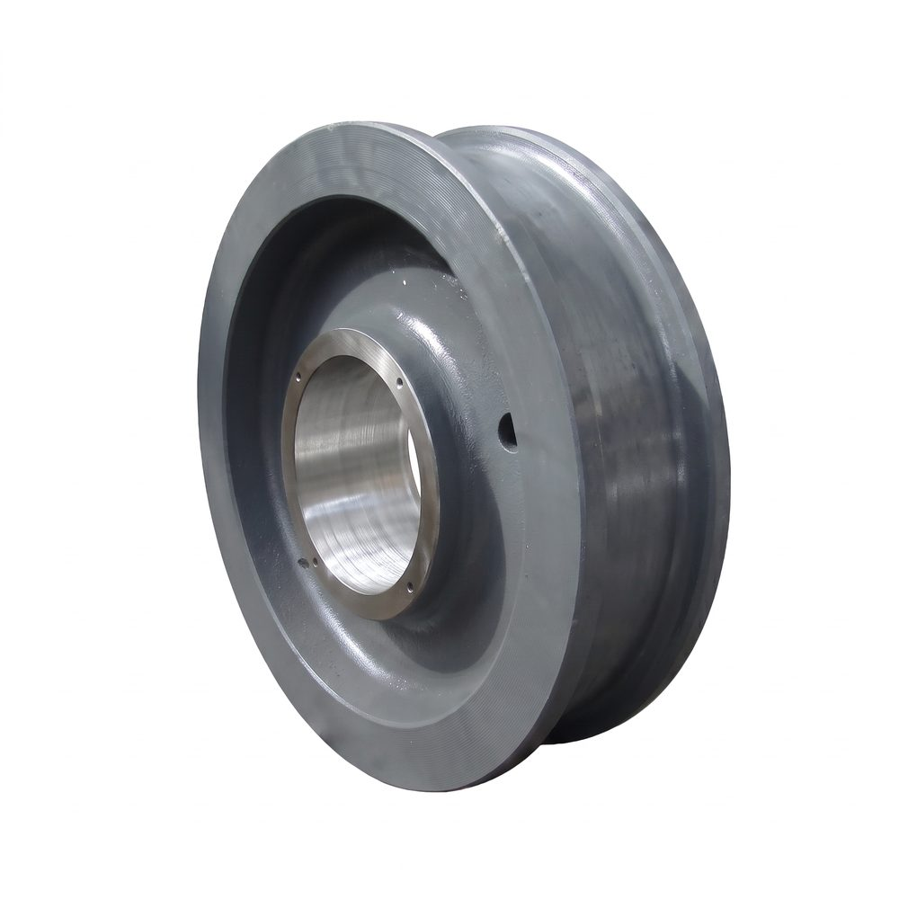
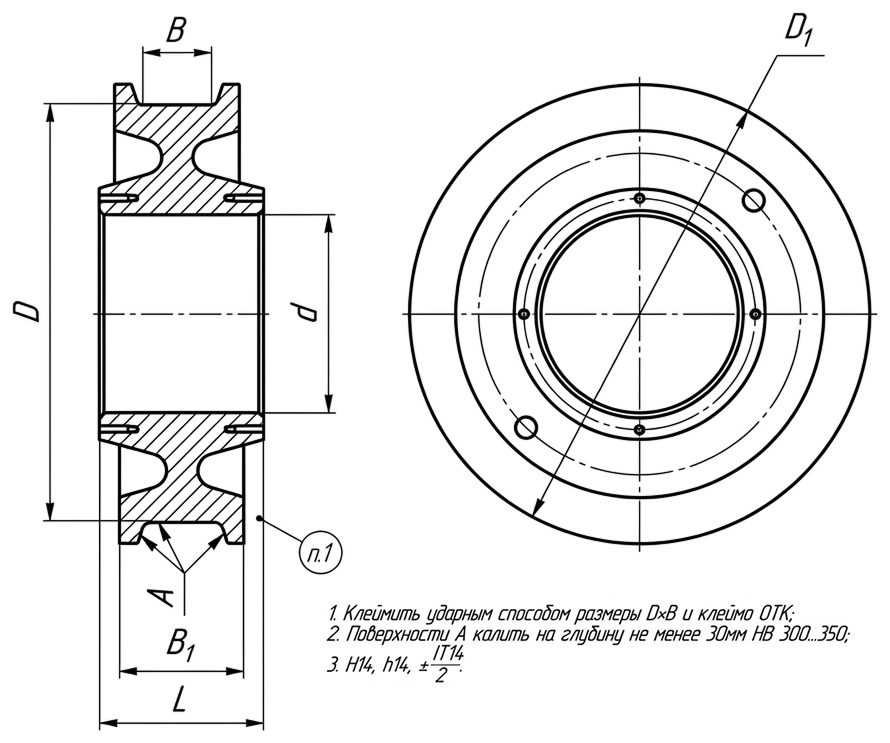
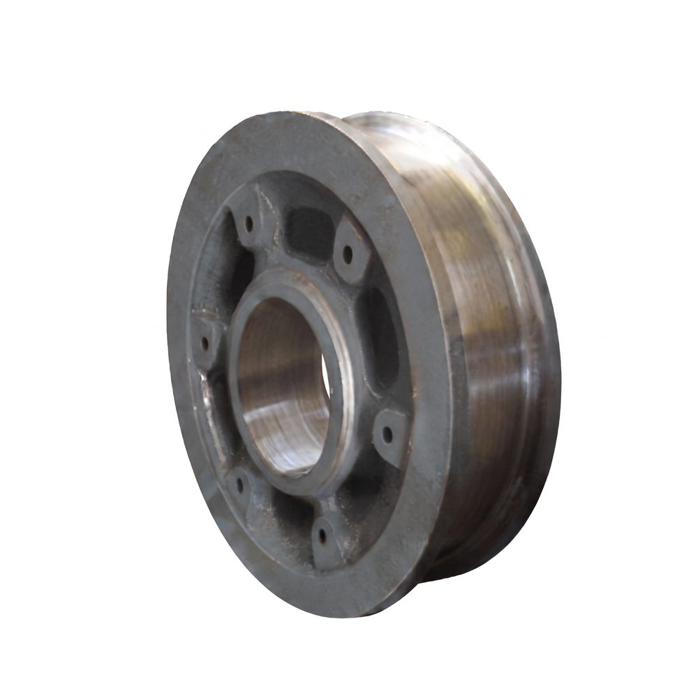
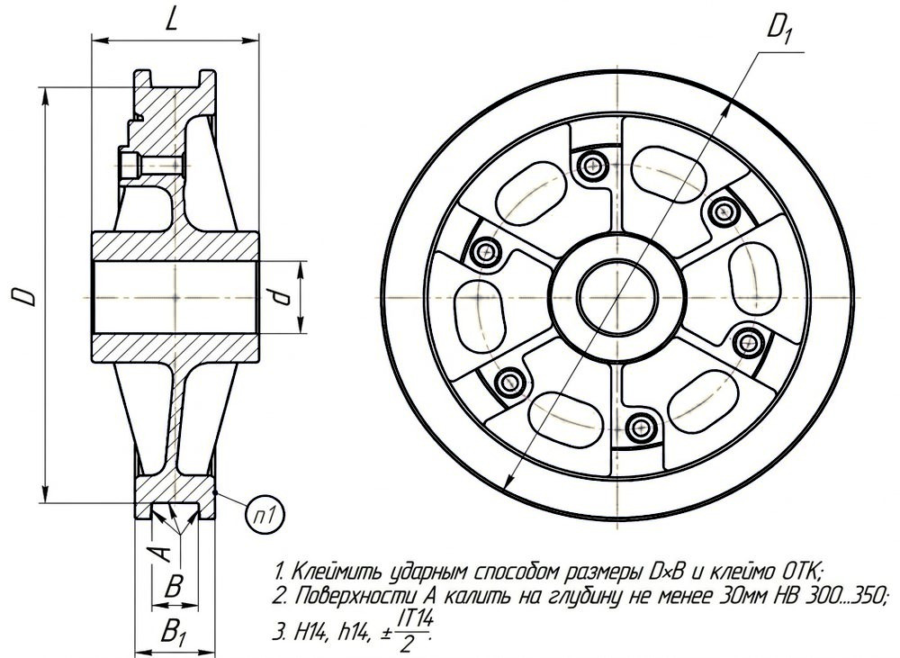

Позвонить: (4842) 75-75-05
Написать сообщение: m-40@inbox.ru
- Главная
- О компании
- Контакты
- Редукторы и мотор-редукторы
- Колеса крановые
- Блоки полиспаста
- Шкивы тормозные
- Муфты
- Крюки и крюковые подвески
- Грузовые барабаны
- Шлицевые детали
- Конические шестерни
- Цилиндрические шестерни
- Запасные части для козловых кранов
- Запасные части для портальных кранов
- Запасные части для башенных кранов
- Техническая информация
- Правовая информация
Колеса крановые → Колеса крановые двухребордные К2Р
- Главная
- О компании
- Контакты
- Редукторы и мотор-редукторы
- Колеса крановые
- Блоки полиспаста
- Шкивы тормозные
- Муфты
- Крюки и крюковые подвески
- Грузовые барабаны
- Конические шестерни
- Цилиндрические шестерни
- Шлицевые детали
- Запасные части для козловых кранов
- Запасные части для портальных кранов
- Запасные части для башенных кранов
- Техническая информация
- Правовая информация

Крановые колеса ходовой части механизма передвижения крана являются одной из главных деталей крана и имеют свойство быстро изнашиваться, при интенсивной эксплуатации.
Ходовые колеса механизмов передвижения грузоподъемных кранов и их грузовых тележек могут выполняться кованными, катанными, штампованными или литыми,
с дальнейшей механической и термической обработкой рабочих поверхностей.
Ходовые колеса башенных кранов должны быть двухребордными независимо от ширины колеи.
У одноребордных колес опорных кранов ширина обода с вычетом реборды должна превышать ширину головки рельса не менее чем на 30 мм.
При безребордных ходовых колесах для предотвращения схода колес с рельса применяют направляющие ролики с вертикальной осью вращения. Эти ролики могут перемещаться
как по боковым поверхностям подкрановых рельсов, так и по специальным направляющим, закрепленным на верхнем поясе подкрановой балки.
Поверхность катания направляющего
ролика может быть сферической с радиусом закругления 250.. .350 мм.
Ширина поверхности катания безребордного ходового колеса должна быть больше ширины головки рельса
не менее чем на 60 мм. Применение безребордных ходовых колес с направляющими роликами существенно уменьшает потери на трение, так как трение качения ролика по рельсу
меньше, чем трение скольжения реборд по рельсу, а следовательно, снижается и установочная мощность электродвигателей механизма передвижения х значительно увеличивается
срок службы ходовых колес.
Одноребордные ходовые колеса могут применяться в следующих случаях:
- Если ширина колеи наземных кранов не превышает 4 м и обе нитки пути лежат на одном уровне;
- Если наземные краны передвигаются каждой стороной по двум рельсам при соблюдении условия, чтобы расположение
реборд на одном рельсе было противоположным расположению реборд колес на другом рельсе;
- У опорных и подвесных тележек кранов мостового типа;
- У подвесных тележек, передвигающихся по однорельсовому пути.
Конструкция ходовых колес кранов должна исключать возможность схода колес с рельсов. Для этого ходовые колеса имеют один или два боковых фланца - реборды, служащие
для направления движения колеса по рельсу. Применение безребордных ходовых колес допускают при наличии специальных устройств, исключающих сход колеса с рельсов.
Для обеспечения нормального движении крана при возможных неточностях укладки рельсового пути и неточностях монтажа металлоконструкции крана (а также для обеспечения
выравнивания крана) ширину рабочей части ободов двухребордных ходовых колес следует принимать больше ширины головки рельса: для крановых колес с цилиндрическим
ободом - на 30 мм; для колес с коническим ободом - на 40; для колес крановых тележек - на 15...20 мм.
Изготовление колёс из литых заготовок, применяется в случае особых требований в технических заданиях заказчика, индивидуальных особенностей самого колеса:
(наличие ребер жёсткости; необходимости выполнения сложных посадочных мест под сопрягаемые зубчатые венцы; отсутствие возможности получить необходимую форму,
используя другую заготовку).
После механической обработки для получения необходимой твердости поверхности катания, крановое колесо подвергается закалке.
Закалка – это нагрев металла до критической температуры 700..800 °C и быстрое охлаждение в масле, воде или воздушном потоке при температуре
500..300 °C, выполняется несколькими способами:
- Закалка ТВЧ (токами высокой частоты);
- Объемная закалка;
- Сорбитизация.
При закалке токами высокой частоты процесс происходит очень быстро, но глубина закаленного слоя невелика.
Объемная закалка дает хорошую износостойкость, но упрочняется одновременно ступица и обод, что создает определенные проблемы в процессе эксплуатации и
ремонта.
Сорбитизация дает все преимущества объемной закалки, но позволяет улучшить именно необходимую поверхность, доведя её до состояния «сорбита»,
не изменяя структуру металла в тех областях колеса, где в этом нет необходимости.
Сорбитизация с использованием современной автоматизированной печи и инновационной системой охлаждения, позволяет произвести термическую обработку
колеса кранового до твердости дорожки катания 300..390 НВ. Глубина закаленного слоя от 10 до 40 мм в зависимости от диаметра колеса.
Замена ходовых колес производится в следующих случаях:
- При износе реборд более 50% первоначальной толщины;
- При износе поверхности катания более 15..20% первоначальной толщины обода;
- При наличии не подлежащих завариванию раковин на поверхности катания, суммарной площадью более 4% всей поверхности и суммарной глубиной более 5% толщины обода;
- При наличии сквозных трещин.
Ходовые колеса башенных кранов и, как правило, колеса мостовых кранов - двухребордные.
Внешний вид и чертеж колес для башенных и мостовых кранов приведен на Рисунке 1.
Особенность данных колес - ширина ступицы меньше, либо равна общей ширине колеса, благодаря чему данные колеса изготавливаются из штампованных заготовок.
Размеры посадочного отверстия и ширина шпон-паза как правило, находятся в одних размерных рядах, поэтому данные колеса можно считать типовыми.
|
 |
|||||
| Рисунок 1. Внешний вид и чертеж колеса башенных и мостовых кранов | |||||
Основные размеры колес башенных и мостовых кранов
| Наименование | D | D1 | B | B1 | L | Масса, кг, не более |
| К2Р 200×60 | 200 | 230 | 60 | 90 | 80 | 15,0 |
| К2Р 250×70 | 250 | 290 | 70 | 110 | 110 | 30,0 |
| К2Р 320×70 | 320 | 360 | 70 | 110 | 130 | 45,0 |
| К2Р 320×80 | 320 | 360 | 80 | 120 | 140 | 50,0 |
| К2Р 400×80 | 400 | 450 | 80 | 130 | 120 | 72,0 |
| К2Р 400×90 | 400 | 450 | 90 | 140 | 120 | 80,0 |
| К2Р 400×100 | 400 | 450 | 100 | 150 | 130 | 90,0 |
| К2Р 500×90 | 500 | 550 | 90 | 150 | 140 | 145,0 |
| К2Р 500×100 | 500 | 550 | 100 | 150 | 140 | 145,0 |
| К2Р 560×90 | 560 | 600 | 90 | 150 | 140 | 175,0 |
| К2Р 560×100 | 560 | 600 | 100 | 150 | 140 | 167,0 |
| К2Р 560×130 | 560 | 600 | 130 | 180 | 170 | 198,0 |
| К2Р 600×90 | 600 | 650 | 90 | 160 | 150 | 220,0 |
| К2Р 600×100 | 600 | 650 | 100 | 150 | 150 | 250,0 |
| К2Р 630×90 | 630 | 680 | 90 | 180 | 150 | 240,0 |
| К2Р 630×100 | 630 | 680 | 100 | 180 | 150 | 250,0 |
| К2Р 630×130 | 630 | 680 | 130 | 220 | 180 | 185,0 |
| К2Р 700×100 | 700 | 770 | 100 | 150 | 150-160 | 300,0 |
| К2Р 700×110 | 700 | 770 | 110 | 160 | 150-160 | 330,0 |
| К2Р 700×130 | 700 | 770 | 130 | 160 | 150-160 | 390,0 |
| К2Р 700×150 | 700 | 770 | 130 | 160 | 150-160 | 390,0 |
| К2Р 710×100 | 710 | 770 | 100 | 150-160 | 150-160 | 300,0 |
| К2Р 710×110 | 710 | 770 | 110 | 160 | 150-160 | 330,0 |
| К2Р 710×130 | 710 | 770 | 130 | 180 | 160-190 | 380,0 |
| К2Р 710×150 | 710 | 770 | 150 | 180 | 160-190 | 420,0 |
| К2Р 800×110 | 800 | 880 | 110 | 190 | 160-170 | 360,0 |
| К2Р 800×130 | 800 | 880 | 130 | 190 | 160-170 | 420,0 |
| К2Р 800×150 | 800 | 880 | 150 | 210 | 170-200 | 480,0 |
| К2Р 800×170 | 800 | 880 | 170 | 250 | 160-170 | 640,0 |
| К2Р 900×130 | 900 | 980 | 130 | 190 | 170 | 490,0 |
| К2Р 900×150 | 900 | 980 | 130 | 210 | 170 | 580,0 |
| К2Р 900×170 | 900 | 980 | 130 | 250 | 170 | 690,0 |
| К2Р 1000×170 | 1000 | 1080 | 170 | 250 | 230 | 890,0 |
Ходовые колеса большинства козловых кранов являются двухребордными.
Внешний вид и чертеж типовых колес К2Р 500×100 для козловых кранов приведен на Рисунке 2.
Особенность данных колес - ширина ступицы больше общей ширины колеса.
Привод колес осуществляется через ходовую тележку, конструкции которых имеют незначительные отличия. Чаще всего к ведущему
колесу болтами крепится зубчатый венец, который и передает вращение на колесо.
|
 |
 |
||||
| Рисунок 2. Внешний вид и чертеж приводного колеса козлового крана | |||||
|
 |
 |
||||
| Рисунок 3. Внешний вид и чертеж холостого колеса козлового крана | |||||
Основные размеры колес козловых кранов
| Наименование | D | D1 | B | B1 | L | Масса, кг, не более |
| К2Р 500×100 | 500 | 550 | 100 | 150 | 200 | 150 |
Ходовые колеса большинства портальных кранов являются двухребордными.
Внешний вид и чертеж типовых колес К2Р 500×100 для портальных кранов приведен на Рисунке 3.
Особенность данных колес - ширина ступицы больше общей ширины колеса.
Привод колес осуществляется через ходовую тележку, конструкции которых имеют незначительные отличия. Чаще всего к ведущему
колесу болтами крепится зубчатый венец, который и передает вращение на колесо.
|
 |
 |
||||
| Рисунок 3. Внешний вид и чертеж колеса портального крана | |||||
Основные размеры колес портальных кранов
| Наименование | D | D1 | B | B1 | L | Масса, кг, не более |
| К2Р 500×100 | 500 | 550 | 100 | 150 | 220 | 150 |
Конструкция ходовых колес кранов должна исключать возможность схода колес с рельсов. Для этого ходовые колеса имеют один или два боковых фланца - реборды, служащие
для направления движения колеса по рельсу. Применение безребордных ходовых колес допускают при наличии специальных устройств, исключающих сход колеса с рельсов.
Для обеспечения нормального движения крана при возможных неточностях укладки рельсового пути и неточностях монтажа металлоконструкции крана (а также для обеспечения
выравнивания крана) ширину рабочей части ободов двухребордных ходовых колес следует принимать больше ширины головки рельса: для крановых колес с цилиндрическим
ободом - на 30 мм; для колес с коническим ободом - на 40; для колес крановых тележек - на 15...20 мм.
Узнать цену на крановые колеса Вы можете здесь либо по телефону:
(4842) 75-75-05
(4842) 75-75-05
КМЗ
Калужский механический завод
г. Калуга, ул. Дорожная, д. 40
Пн–Пт 8:00–17:00
Пн–Пт 8:00–17:00
© 2026 ООО «Калужский механический завод»
ИНН 4028052180 · КПП 402801001